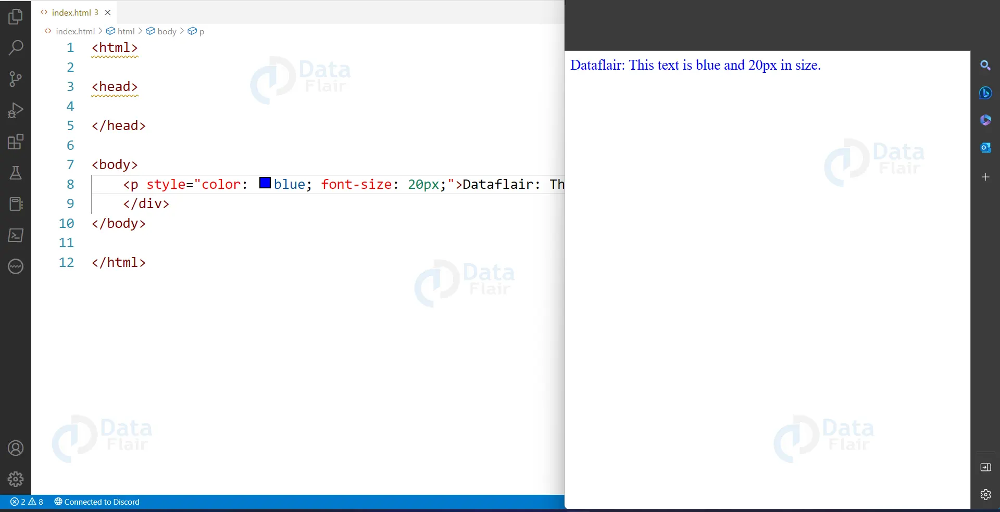

Blog Dev
HTML est un langage de balisage utilisé pour créer des pages web. Il permet de structurer le contenu et d'ajouter
des éléments multimédias.
comentaires
-
Abderrahame Raquibi : Excellente introduction ! HTML est vraiment la base de tout développement web.
J'ajouterais que les balises sémantiques comme header , main , section sont très importantes pour l'accessibilité.
-
Yassir Ait jilali : Très bon article ! Je recommande aussi d'apprendre les attributs HTML5 comme data-*, aria-* pour une meilleure expérience utilisateur et
l'accessibilité. Les formulaires HTML5 ont aussi de nouvelles fonctionnalités intéressantes !
Post 2: Introduction CSS

comentaires
-
Abderrahame Raquibi : Excellente image illustrative ! Elle montre bien l'importance du CSS dans la mise
en forme. J'aurais ajouté une comparaison avant/après pour montrer la différence entre du HTML brut et
du HTML stylé avec CSS. Les media queries sont
aussi essentielles pour le responsive design !
-
Yassir Ait jilali : Très bonne illustration ! Cette image démontre parfaitement la puissance du CSS. Je
suggère d'explorer aussi les animations CSS, les
transitions et les transforms pour créer des effets visuels modernes et
engageants.